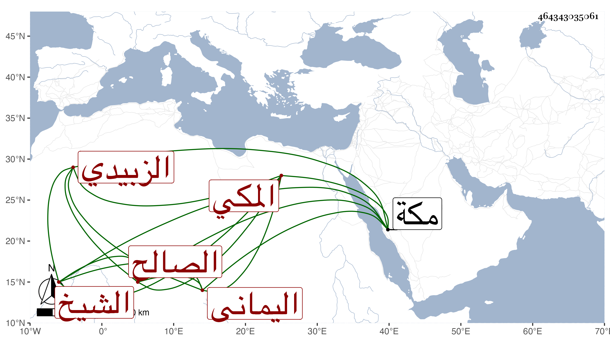

0902Sakhawi.DawLamic.ITO20230111-ara1.EIS1600.464343035061
Biography ID: 464343035061
27
طلحة بن محمد الشمة بن إبراهيم . الشيخ الصالح اليماني الزبيدي ثم المكي ويعرف بالشمة . مات بمكة في جمادى الأولى سنة ستين وقد كان يسمع معنا بها على الشرف أبي الفتح المراغي وفي الظن أنه من أصحابه وقبل ذلك سنة أربع وثمانمائة سمع علي الشريف عبد الرحمن الفاسي الشفا بأفوات .
